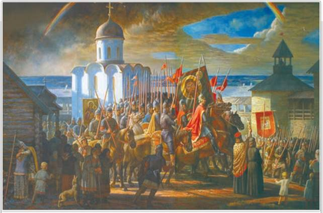
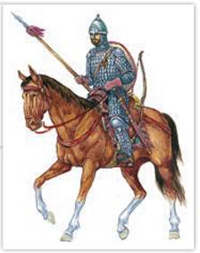
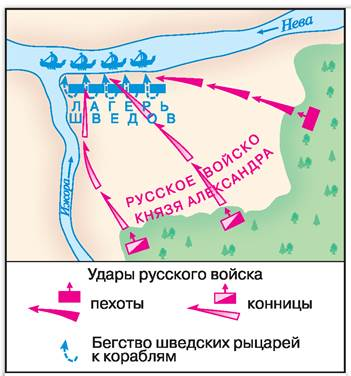
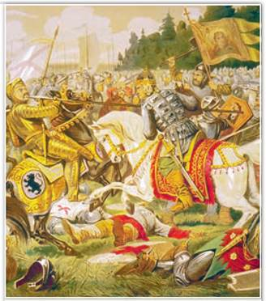
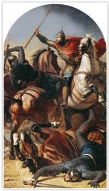
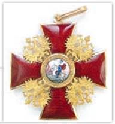
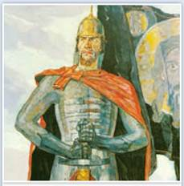
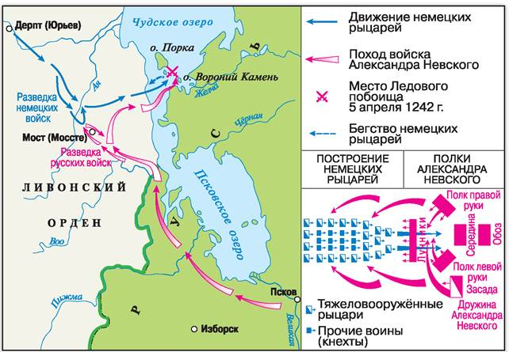

Александр Невский. Художник А. Булдаков. 2007 г.
Картина посвящена периоду, когда с запада Руси угрожали крестоносцы. Князь с дружиной готовы отразить наступление врага.
РОССИЯ
МИР
1. Положение в Прибалтике. В 1238 г. Новгород избежал нашествия Батыя, но на северо-западе Руси и без монголов не было мира. В начале XIII в. границам Новгородской земли угрожал не менее агрессивный враг — рыцари-крестоносцы. Папа римский и германский император обещали крестоносцам все территории, которые они завоюют в походах на северо-восток Европы. К началу XIII в. шведы вступили в соперничество с новгородцами за влияние в прибалтийских землях, что неминуемо вело к конфликту.
На побережье Балтийского моря издавна жили представители финно-угров (эсты) и балтов (пруссы, ятвяги, литва, земгалы и др.). От Финского и Рижского заливов шли северные участки торгового пути «из варяг в греки». В IX—XII вв. земли у Чудского и Ладожского озёр осваивали русские переселенцы. В X в. князь Владимир Святославич совершил поход на ятвягов и взял с них дань. Часть ятвягов при Ярославе Мудром вошла в государство Русь и постепенно обрусела. В 1030 г. Ярослав Мудрый основал в земле эстов город Юрьев. В XI—XII вв. речные торговые пути, ведущие к Рижскому и Финскому заливам, находились под контролем Полоцкого княжества и Новгорода.
2. Продвижение крестоносцев в землях Прибалтики. Народы Прибалтики были язычниками. В 1150—1192 гг. католический монах Мейнард первым начал проповедовать среди них христианство. В земле ливов он создал небольшую христианскую общину. Папа римский назначил его епископом, но большинство ливов оставались верны своим древним богам и не раз хотели убить Мейнарда. Умер он своей смертью, а вот его преемник погиб в бою с ливами. В ответ Рим призвал к Крестовому походу. В 1200 г. крестоносцы захватили устье Западной Двины и на месте поселения ливов основали крепость Ригу (1201), ставшую центром духовно-рыцарского (военного монашеского) ордена меченосцев. Меченосцы должны были защищать свои завоевания, а также контролировать морскую торговлю в Прибалтике.
Подробнее. Рыцари ордена меченосцев носили плащи с изображением креста и меча. Они стали возводить замки, опираясь на которые продвигались вглубь земель, плативших прежде дань Полоцкому княжеству. Поход полоцкого князя Владимира в 1203 г. заставил крестоносцев отступить. Но с прибытием в Ригу подкрепления из Германии, а также армии датского короля Полоцкая земля утратила свои позиции в Прибалтике.
В начале XIII в. меченосцы захватили большую часть земли эстов. Это был удар по новгородцам, собиравшим с эстов дань.

Русский воин времён Александра Невского
Голову конного тяжеловооружённого воина старшей дружины защищал шлем, а под ним — подшлемник. К шлему крепили бармицу — кольчужную сетку. Под кольчужный доспех надевали стёганый кафтан. Стальные наплечники, наколенники и кольчужные чулки также являлись хорошей защитой в бою. Копьём воин выбивал врага из седла.
В 1215 г. меченосцы овладели Юрьевом. Новгородцы вместе с эстами его отвоевали. Новгород отрядил в Юрьев войско во главе с князем Вячко. Но в 1224 г., согласно Новгородской летописи, «убиша князя Вячка немцы в Гюргеве, а город взяша».
В Новгороде княжил тогда Ярослав Всеволодович, один из сыновей Всеволода Большое Гнездо. Он разбил крестоносцев под Юрьевом, но в город не вошёл. Немцы назвали Юрьев Дерптом и создали здесь католическое епископство. Дальнейшее продвижение крестоносцев серьёзно угрожало Новгородской земле. В 1236 г. в битве при Сауле (Шауляе) литовцы разгромили меченосцев. Большинство рыцарей во главе с магистром погибли. Римский папа спешно отправил рыцарей Тевтонского ордена в землю эстов, где они учредили из оставшихся меченосцев Ливонский орден (1237).
3. Невская битва. С 1054 г. Римская и Греческая церкви были в схизме (расколе). Римский папа Григорий IX ратовал за новый Крестовый поход. Он призывал католиков идти не только на литовцев-язычников, но и на земли русских православных людей.
Устье Невы и побережье Ладожского озера принадлежали Новгороду. Выход к морю был важен для новгородцев. Через Неву их торговые суда попадали в Балтийское море, а затем в страны Европы. В 1240 г. шведы высадились у места впадения Ижоры в Неву. Возле устья Ижоры они пытались построить укрепление. В Новгороде княжил тогда 19-летний Александр Ярославич, его отец Ярослав Всеволодович занимал престол во Владимире.

Невская битва, состоявшаяся 15 июля 1240 г.

Невская битва. Фрагмент. Художник А. Кившенко. 1888 г.
С помощью схемы и иллюстрации расскажите о ходе Невской битвы.
Утром 15 июля 1240 г., совершив стремительный переход к берегу Невы, войско Александра внезапно атаковало шведов. Расчёт молодого князя оправдался. Он сам, его дружина и новгородское ополчение мужественно сражались со шведами на своей земле. «...И была сеча великая с римлянами, и перебил их князь», — сообщает автор Жития Александра Невского. Остатки шведского войска обратились в бегство, они с трудом пробились к своим кораблям и в панике отплыли.
Подробнее. Житие Александра Невского рассказывает о подвигах русских воинов и самого князя Александра, совершённых в Невской битве. Боярин Гаврила Олексич, преследуя врага, въехал по сходням на шведский корабль, был сброшен в воду, но выбрался и «бился с самим воеводою посреди их войска». Новгородец Сбыслав Якунович «бился одним топором, не имея страха в душе своей». Ловчий князя Яков-полочанин отвагой заслужил похвалу от князя Александра. Пеший отряд новгородца Миши потопил три шведские ладьи. Княжеский слуга Ратмир, окружённый врагами, сражался, пока не пал от множества ран. Дружинник Савва пробился к «златоверхому» шатру шведов и подсёк его центральный столб. Сам князь Александр копьём «возложил печать» на лицо предводителя шведов.

Александр Невский побеждает ярла Биргера на реке Ижоре. Художник Ф. Моллер. 1866 г.
Победа в Невской битве остановила продвижение шведов на Ладогу и сохранила для Новгорода выход в Балтийское море — важнейший путь для торговли с Ганзой. За неё Александр получил своё прозвище Невский. Согласно Житию, тогда же перед походом он произнёс слова, ставшие знаменитыми в веках: «Не в силе Бог, но в правде». После победы в Невской битве вырос политический вес и авторитет молодого князя Александра Ярославича.
4. Ледовое побоище. Осенью 1240 г. немецкие рыцари-крестоносцы напали на новгородские земли. Они захватили пограничную крепость Изборск и подступили к Пскову. Тогда сторонники союза с ливонцами во главе с псковским посадником Твердилой открыли крепостные ворота. Началось разорение новгородских земель. Крестоносцы захватили чудские и водские владения Новгородской республики и заложили крепость Копорье.
Князь Александр ещё до войны с орденом поссорился с новгородцами и уехал в свой Переяславль-Залесский. В разгар войны с ливонцами новгородцы обратились к великому князю Ярославу Всеволодовичу за помощью. Тогда Александр Ярославич вернулся в Новгород. Во главе новгородцев он взял крепость Копорье и приказал срыть её. Часть пленных рыцарей князь привёл в Новгород, часть — отпустил, а перешедших на сторону врага изменников казнил.
Зимой 1242 г. Александр вместе с братом Андреем Ярославичем, которого отец прислал на подмогу, освободил Псков. Никогда больше ливонцы Псков не захватывали. Русские рати двинулись на орден, но их передовой отряд попал в засаду и был разбит рыцарями. Тогда русская дружина отошла к Чудскому озеру.
5 апреля 1242 г. на льду Чудского озера произошло сражение, которое вошло в историю как Ледовое побоище. Рыцари построились клином («свиньёй»). Впереди «свиньи» двигалась тяжеловооружённая рыцарская конница, за ней — пехота. Александр Ярославич, зная о тактике рыцарей, поставил во главе войска лучников и укрепил фланги.

Орден Александра Невского. Учреждён в 1725 г.
Единственная государственная награда, которая была и есть в наградных системах нашего Отечества: в Российской империи. Советском Союзе и современной России.
Крестоносцы атаковали клином и пробили центр русского войска, угрожая заходом в тыл. Но в разгар боя русские дружины с флангов стиснули конных рыцарей, как клещами. «И была сеча жестокая, и стоял треск от ломающихся копий и звон от ударов мечей». Рыцари отступили. «И некуда им было скрыться; и били их на льду на протяжении семи вёрст...» — записал летописец.
Александр Ярославич одержал полную победу над рыцарями. По мирному договору крестоносцы отказывались от всех завоеваний в Новгородской земле, стороны провели обмен пленными. Историки утверждают, что впоследствии ливонские войска не вторгались так глубоко на русскую территорию.
Так устояли новгородские границы и был заложен фундамент для успешной защиты их в будущем. Нетронутой осталась и православная вера, за что Русская церковь особо чтит князя Александра Невского как защитника православной веры.
День победы русских воинов князя Александра Невского над немецкими рыцарями на Чудском озере отмечается как День воинской славы России.
ЧЕСТЬ И СЛАВА ОТЕЧЕСТВА

Александр Невский. Фрагмент. Художник П. Корин. 1942 г.
АЛЕКСАНДР НЕВСКИЙ
В истории России есть множество достойных имён. Среди них Александр Невский (1221—1263) занимает особое место. Почему же этого князя чтят спустя не один десяток веков? Чем он заслужил признание государства, уважение народа, почитание православной церкви? Вспомним, что происходило на Руси в первой половине XIII в. С востока русские города жгли и разоряли монголы, с запада угрожал не менее опасный враг — шведы и немецкие рыцари. Русь оказалась между двух огней. Уже были захвачены русские города Изборск и Псков. В это тревожное для Руси время молодой князь Александр Ярославич проявил себя как талантливый военачальник, мудрый правитель, защитник православной веры. Невская битва и Ледовое побоище остановили натиск с запада. Более десяти лет после битв, выигранных Александром, крестоносцы не тревожили Новгородскую землю. Это были важные победы Руси на фоне трагического исхода Батыева нашествия. Они стали священным символом, вдохновлявшим не одно поколение россиян на защиту своей Родины.

Ледовое побоище 5 апреля 1242 г.
Полководец Ганнибал в ходе битвы с римским войском под Каннами в 216 г. до н. э. обошёл противника с флангов, окружил его и уничтожил. Термин «Канны» закрепился в теории военного искусства. Применим ли он к действиям Александра Невского в Ледовом побоище? Ответ объясните на основе схемы и текста учебника.
В 1268 г. новгородцы, псковичи и дружины суздальцев разбили крестоносцев у замка Раковор (территория современной Эстонии).
ПОДВЕДЁМ ИТОГИ
На рубеже XII—XIII вв. жившие в Прибалтике народы подверглись нападению немецких рыцарей-крестоносцев. Под ударом ордена, а также Швеции оказалась и Новгородская земля. Благодаря героизму русских воинов и полководческому таланту князя Александра Невского агрессия с запада была остановлена.
Вопросы и задания
Работаем с хронологией
Расположите в хронологической последовательности события: 1) создание Ливонского ордена; 2) Ледовое побоище; 3) Раковорская битва; 4) Невская битва.
Работаем с источником
Прочитайте отрывок из статьи историка А. Кирпичникова «Ледовое побоище 1242 г. (новое осмысление)».
Ледовое побоище не отличалось ни большим количеством участников, ни ошеломляющими потерями... но по своим последствиям оказалось судьбоносным, ибо обозначило крушение захватнических планов Ливонского ордена на Руси в самый трагический момент её истории.
Битва 1242 г. обогатила воинское умение русских в отношении манёвра, выбора момента и направления удара своих подразделений, рассечения боевого порядка противника и его окружения. «Железная свинья» перестала казаться несокрушимой и неуязвимой. Ледовое побоище запало в душу современников как общенародный подвиг, придало жителям Новгородской земли большую уверенность в борьбе с врагами Руси, не только западными, но и восточными.
Работаем с понятиями
Объясните своими словами смысл понятий «крестоносцы» и «военные монашеские ордены». Приведите факты из отечественной истории, связанные с этими понятиями.
ДОПОЛНИТЕЛЬНЫЕ МАТЕРИАЛЫ
«УЧИТЕЛЮ И УЧЕНИКУ».
Материалы к параграфу на портале «История.РФ».